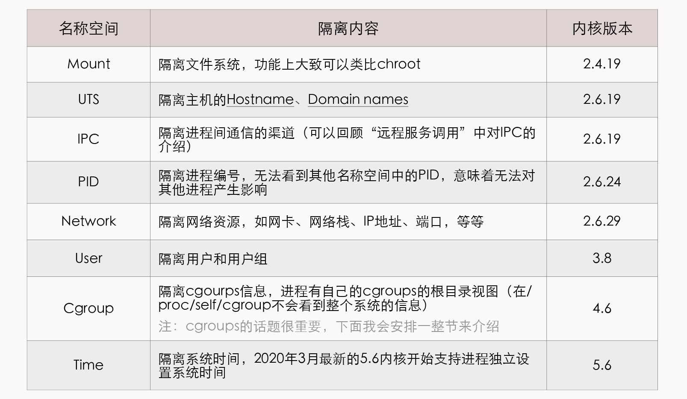
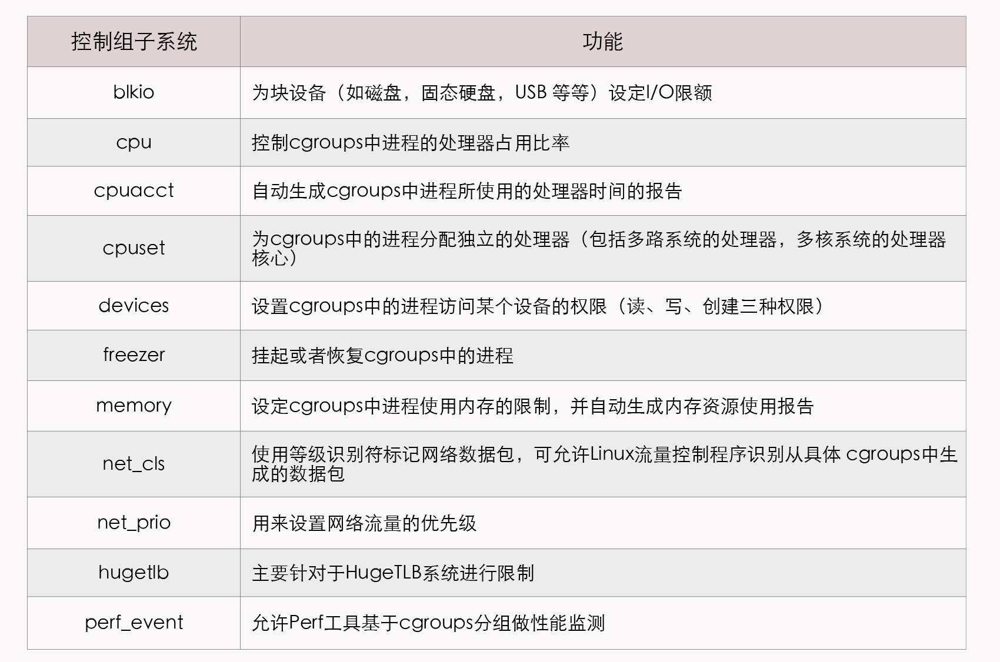

- 00 _导读 _ 什么是“The Fenix Project”？.md
- 00 开篇词 _ 如何构建一个可靠的分布式系统？.md
- 01 _ 原始分布式时代：Unix设计哲学下的服务探索.md
- 02 _ 单体系统时代：应用最广泛的架构风格.md
- 03 _ SOA时代：成功理论与失败实践.md
- 04 _ 微服务时代：SOA的革命者.md
- 05 _ 后微服务时代：跨越软件与硬件之间的界限.md
- 06 _ 无服务时代：“不分布式”云端系统的起点.md
- 07 _ 远程服务调用（上）：从本地方法到远程方法的桥梁.md
- 08 _ 远程服务调用（下）：如何选择适合自己的RPC框架？.md
- 09 _ RESTful服务（上）：从面向过程编程到面向资源编程.md
- 10 _ RESTful服务（下）：如何评价服务是否RESTful？.md
- 11 _ 本地事务如何实现原子性和持久性？.md
- 12 _ 本地事务如何实现隔离性？.md
- 13 _ 全局事务和共享事务是如何实现的？.md
- 14 _ 分布式事务之可靠消息队列.md
- 15 _ 分布式事务之TCC与SAGA.md
- 16 _ 域名解析系统，优化HTTP性能的第一步.md
- 17 _ 客户端缓存是如何帮助服务器分担流量的？.md
- 18 _ 传输链路，优化HTTP传输速度的小技巧.md
- 19 _ 如何利用内容分发网络来提高网络性能？.md
- 20 _ 常见的四层负载均衡的工作模式是怎样的？.md
- 21 _ 服务端缓存的三种属性.md
- 22 _ 分布式缓存如何与本地缓存配合，提高系统性能？.md
- 23 _ 认证：系统如何正确分辨操作用户的真实身份？.md
- 24 _ 授权（上）：系统如何确保授权的过程可靠？.md
- 25 _ 授权（下）：系统如何确保授权的结果可控？.md
- 26 _ 凭证：系统如何保证与用户之间的承诺是准确完整且不可抵赖的？.md
- 27 _ 保密：系统如何保证敏感数据无法被内外部人员窃取滥用？.md
- 28 _ 传输（上）：传输安全的基础，摘要、加密与签名.md
- 29 _ 传输（下）：数字证书与传输安全层.md
- 30 _ 验证：系统如何确保提交给服务的数据是安全的？.md
- 31 _ 分布式共识（上）：想用好分布式框架，先学会Paxos算法吧.md
- 32 _ 分布式共识（下）：Multi Paxos、Raft与Gossip，分布式领域的基石.md
- 33 _ 服务发现如何做到持续维护服务地址在动态运维中的时效性？.md
- 34 _ 路由凭什么作为微服务网关的基础职能？.md
- 35 _ 如何在客户端实现服务的负载均衡？.md
- 36 _ 面对程序故障，我们该做些什么？.md
- 37 _ 要实现某种容错策略，我们该怎么做？.md
- 38 _ 限流的目标与模式.md
- 39 _ 如何构建零信任网络安全？.md
- 40 _ 如何实现零信任网络下安全的服务访问？.md
- 41 _ 分布式架构中的可观测到底说的是什么？.md
- 42 _ 分析日志真的没那么简单.md
- 43 _ 一个完整的分布式追踪系统是什么样子的？.md
- 44 _ 聚合度量能给我们解决什么问题？.md
- 45 _ 模块导学：从微服务到云原生.md
- 46 _ 容器的崛起（上）：文件、访问、资源的隔离.md
- 47 _ 容器的崛起（下）：系统、应用、集群的封装.md
- 48 _ 以容器构建系统（上）：隔离与协作.md
- 49 _ 以容器构建系统（下）：韧性与弹性.md
- 50 _ 应用为中心的封装（上）：Kustomize与Helm.md
- 51 _ 应用为中心的封装（下）：Operator与OAM.md
- 52 _ Linux网络虚拟化（上）：信息是如何通过网络传输被另一个程序接收到的？.md
- 53 _ Linux网络虚拟化（下）：Docker所提供的容器通讯方案有哪些？.md
- 54 _ 容器网络与生态：与CNM竞争过后的CNI下的网络插件生态.md
- 55 _ 谈谈Kubernetes的存储设计理念.md
- 56 _ Kubernetes存储扩展架构：一个真实的存储系统如何接入或移除新存储设备？.md
- 57 _ Kubernetes存储生态系统：几种有代表性的CSI存储插件的实现.md
- 58 _ Kubernetes的资源模型与调度器设计.md
- 59 _ 透明通讯的涅槃（上）：通讯的成本.md
- 60 _ 透明通讯的涅槃（下）：控制平面与数据平面.md
- 61 _ 服务网格与生态：聊聊服务网格的两项标准规范.md
- 63 _ 基于Spring Boot的单体架构.md
- 64 _ 基于Spring Cloud的微服务架构.md
- 65 _ 基于Kubernetes的微服务架构.md
- 66 _ 基于Istio的服务网格架构.md
- 67 _ 基于云计算的无服务架构.md
- 春节特别放送（上）_ 有的放矢，事半功倍.md
- 春节特别放送（下）_ 积累沉淀，知行合一.md
- 用户故事 _ 詹应达：持续成长，不惧未来.md
- 结束语 _ 程序员之路.md
- 结课测试 _ 一套习题，测出你的掌握程度.md
46 _ 容器的崛起（上）：文件、访问、资源的隔离
你好，我是周志明。接下来的两节课，我会以容器化技术的发展为线索，带你从隔离与封装两个角度，去学习和了解容器技术。
今天，我们就先来学习下Linux系统中隔离技术的发展历程，以此为下节课理解“以容器封装应用”的思想打好前置基础。
隔离文件：chroot
首先要知道，人们使用容器的最初目的，并不是为了部署软件，而是为了隔离计算机中的各类资源，以便降低软件开发、测试阶段可能产生的误操作风险，或者是专门充当蜜罐，吸引黑客的攻击，以便监视黑客的行为。
容器的起点呢，可以追溯到1979年Version 7 UNIX系统中提供的chroot命令，这个命令是英文单词“Change Root”的缩写，它所具备的功能是当某个进程经过chroot操作之后，它的根目录就会被锁定在命令参数所指定的位置，以后它或者它的子进程就不能再访问和操作该目录之外的其他文件。
1991年，世界上第一个监控黑客行动的蜜罐程序就是使用chroot来实现的，那个参数指定的根目录当时被作者被戏称为“Chroot监狱”（Chroot Jail），而黑客突破chroot限制的方法就叫做Jailbreak。后来，FreeBSD 4.0系统重新实现了chroot命令，把它作为系统中进程沙箱隔离的基础，并将其命名为FreeBSD jail。
再后来，苹果公司又以FreeBSD为基础研发出了举世闻名的iOS操作系统，此时，黑客们就把绕过iOS沙箱机制，以root权限任意安装程序的方法称为“越狱”（Jailbreak），当然这些故事都是题外话了。
到了2000年，Linux Kernel 2.3.41版内核引入了pivot_root技术来实现文件隔离，pivot_root直接切换了根文件系统（rootfs），有效地避免了chroot命令可能出现的安全性漏洞。咱们课程后面要提到的容器技术，比如LXC、Docker等等，也都是优先使用pivot_root来实现根文件系统切换的。
不过时至今日，chroot命令依然活跃在Unix系统，以及几乎所有主流的Linux发行版中，同时也以命令行工具（chroot(8)）或者系统调用（chroot(2) ）的形式存在着，但无论是chroot命令还是pivot_root，它们都不能提供完美的隔离性。
其实原本按照Unix的设计哲学，一切资源都可以视为文件（In UNIX，Everything is a File），一切处理都可以视为对文件的操作，在理论上应该是隔离了文件系统就可以安枕无忧才对。
可是，哲学归哲学，现实归现实，从硬件层面暴露的低层次资源，比如磁盘、网络、内存、处理器，再到经操作系统层面封装的高层次资源，比如UNIX分时（UNIX Time-Sharing，UTS）、进程ID（Process ID，PID）、用户ID（User ID，UID）、进程间通信（Inter-Process Communication，IPC）等等，都存在着大量以非文件形式暴露的操作入口。
所以我才会说，以chroot为代表的文件隔离，仅仅是容器崛起之路的起点而已。
隔离访问：namespaces
那么到了2002年，Linux Kernel 2.4.19版内核引入了一种全新的隔离机制：Linux名称空间（Linux Namespaces）。
名称空间的概念在很多现代的高级程序语言中都存在，它主要的作用是避免不同开发者提供的API相互冲突，相信作为一名开发人员的你肯定不陌生。
Linux的名称空间是一种由内核直接提供的全局资源封装，它是内核针对进程设计的访问隔离机制。进程在一个独立的Linux名称空间中朝系统看去，会觉得自己仿佛就是这方天地的主人，拥有这台Linux主机上的一切资源，不仅文件系统是独立的，还有着独立的PID编号（比如拥有自己的0号进程，即系统初始化的进程）、UID/GID编号（比如拥有自己独立的root用户）、网络（比如完全独立的IP地址、网络栈、防火墙等设置），等等，此时进程的心情简直不能再好了。
事实上，Linux的名称空间是受“贝尔实验室九号项目”（一个分布式操作系统，“九号”项目并非代号，操作系统的名字就叫“Plan 9 from Bell Labs”，充满了赛博朋克风格）的启发而设计的，最初的目的依然只是为了隔离文件系统，而不是为了什么容器化的实现。这点我们从2002年发布时，Linux只提供了Mount名称空间，并且其构造参数为“CLONE_NEWNS”（即Clone New Namespace的缩写）而非“CLONE_NEWMOUNT”，就能看出一些端倪。
到了后来，要求系统隔离其他访问操作的呼声就愈发强烈，从2006年起，内核陆续添加了UTS、IPC等名称空间隔离，直到目前最新的Linux Kernel 5.6版内核为止，Linux名称空间支持了以下八种资源的隔离（内核的官网Kernel.org上仍然只列出了前六种，从Linux的Man命令能查到全部八种）：

阅读链接补充：- Hostname- Domain names
如今，对文件、进程、用户、网络等各类信息的访问，都被囊括在Linux的名称空间中，即使一些今天仍有没被隔离的访问（比如syslog就还没被隔离，容器内可以看到容器外其他进程产生的内核syslog），在以后也可以跟随内核版本的更新纳入到这套框架之内。
现在，距离完美的隔离性就只差最后一步了：资源的隔离。
隔离资源：cgroups
如果要让一台物理计算机中的各个进程看起来像独享整台虚拟计算机的话，不仅要隔离各自进程的访问操作，还必须能独立控制分配给各个进程的资源使用配额。不然的话，一个进程发生了内存溢出或者占满了处理器，其他进程就莫名其妙地被牵连挂起，这样肯定算不上是完美的隔离。
而Linux系统解决以上问题的方案就是控制群组（Control Groups，目前常用的简写为cgroups），它与名称空间一样，都是直接由内核提供的功能，用于隔离或者说分配并限制某个进程组能够使用的资源配额。这里的资源配额包括了处理器时间、内存大小、磁盘I/O速度，等等，具体你可以参考下这里给出的表格：

cgroups项目最早是由Google的工程师（主要是Paul Menage和Rohit Seth）在2006年发起的，当时取的名字就叫做“进程容器”（Process Containers），不过“容器”（Container）这个名词的定义在那时候还没有今天那么清晰，不同场景中常有不同的指向。
所以，为了避免混乱，到2007年这个项目才被重新命名为cgroups，在2008年合并到了2.6.24版的内核后正式对外发布，这一阶段的cgroups就被称为“第一代cgroups”。
后来，在2016年3月发布的Linux Kernel 4.5中，搭载了由Facebook工程师（主要是Tejun Heo）重新编写的“第二代cgroups”，其关键改进是支持Unified Hierarchy，这个功能可以让管理员更加清晰、精确地控制资源的层级关系。目前这两个版本的cgroups在Linux内核代码中是并存的，不过在下节课我会给你介绍的封装应用Docker，就暂时仅支持第一代的cgroups。
小结
这节课，我给你介绍了容器技术和思想的起源：chroot命令，这是计算机操作系统中最早的成规模的隔离技术。
此外，你现在也了解到了namespaces和cgroups对资源访问与资源配额的隔离，它们不仅是容器化技术的基础，在现代Linux操作系统中也已经成为了无可或缺的基石。理解了这些基础性的知识，是学习和掌握下节课中讲解的容器应用，即不同封装对象、封装思想的必要前提。
一课一思
请你思考一下：Docker的起源依赖于Linux内核提供的隔离能力，那Docker就是Linux专属的吗？Windows系统中是否有文件、访问、资源的隔离手段？是否存在Windows版本的容器运行时呢？
提示：你可以搜索关于Window Server Contianer的信息，与LXC（Linux Container）对比一下。
欢迎在留言区分享你的思考和见解。如果你觉得有收获，也欢迎把今天的内容分享给更多的朋友。感谢你的阅读，我们下一讲再见。
© 2019 - 2023 Liangliang Lee. Powered by gin and hexo-theme-book.